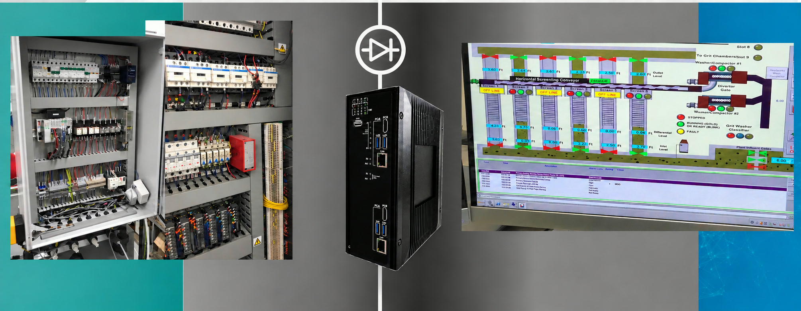

Defense Sites: Segmenting the Building Management System
How defense facilities use Terafence to give operators full visibility of building controls while sealing the BMS network off from the rest of the site
1The Problem
Every modern facility runs on a Building Management System (BMS). It controls HVAC, power, lighting, access and environmental conditions. In a defense facility, those systems keep mission-critical spaces running, from command centres to equipment and server rooms.
BMS controllers are rarely treated as security assets. They often run for years without updates, use open industrial protocols such as Modbus, and sit on networks that connect to many other systems. That makes them an easy and often overlooked way in, and a stepping stone to more sensitive parts of the site.
2The Challenge
In defense facilities operated by a national defense organization, BMS SCADA controllers (PLCs) communicate over Modbus with a local HMI that operators use to monitor building conditions.
Those controllers were a soft pivot point. A traditional two-way connection between the PLCs and the HMI meant that if the HMI or any connected system were compromised, an attacker could write commands to the controllers or use the BMS network to move toward other systems on site.
Securing the outer edge of the OT environment wasn't enough. One compromised system inside OT could still reach the next. At the same time, operators couldn't lose sight of the building systems they are responsible for. They needed continuous, accurate status from every controller.
3The Solution
Terafence was installed between the BMS PLCs and the local HMI to provide micro-segmentation inside the OT environment. Process values from the controllers are delivered to the HMI in one direction only, so operators see everything, and the HMI cannot write back to the PLCs.
- One-way delivery of Modbus process values from the BMS PLCs to the HMI
- Hardware-enforced, so the HMI has no write path to the controllers
- Per-system isolation on site, not just at the OT perimeter
- Continuous monitoring and reporting for facility operators
Because isolation is enforced in hardware, it doesn't rely on firewall rules or configuration that could be changed or misapplied inside the facility.

4The Impact
Operators keep full monitoring of their building systems, and the BMS control network is sealed off from the rest of the site.
Segmentation inside OT, not just at its edge, stops one compromised system from reaching the next.
Full operator visibility.
The HMI receives live status from every BMS controller.
Controllers protected.
No command can be written back to the PLCs through the monitoring link.
Lateral movement blocked.
A compromise elsewhere on site cannot use the BMS as a pivot, and a BMS compromise cannot spread outward.
Defense in depth.
Segmentation is applied inside OT, system by system, as well as at its edge.
Tell us where your boundary sits
Say what has to cross it. We will help you choose the right device and plan a pilot.